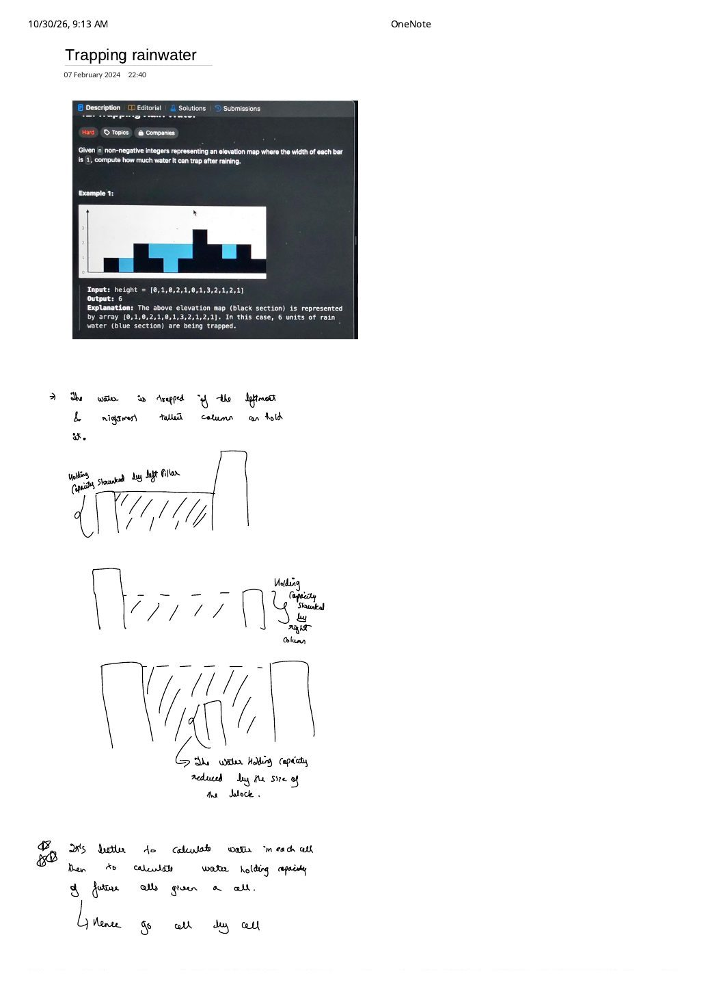
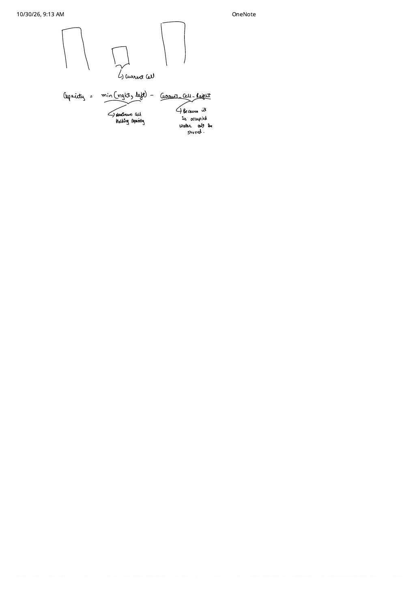
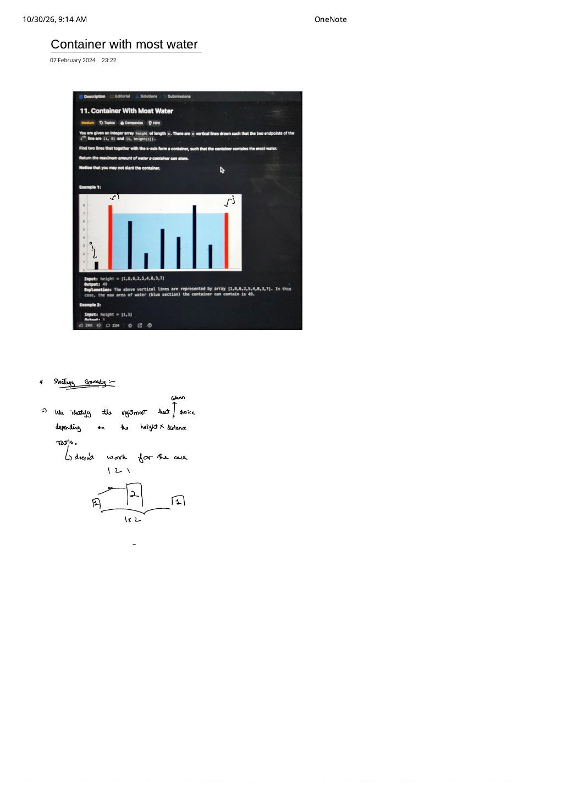

Part 3: Trapping Rain Water & Container With Most Water — Two-Pointer Bottleneck Proofs
Expanded from handwritten competitive coding study notes (07_Trapping_rainwater.pdf, 08_Container_with_most_water.pdf — 3 pages) · Jump to original scans
Trapping Rain Water (LC 42) and Container With Most Water (LC 11) are frequently paired in interviews because both end in a 10-line opposite-end two-pointer loop that advances whichever wall is shorter (height[l] <= height[r]). Yet their physics—and the mathematical reasons why advancing the shorter wall is valid—are completely different. Studying them side-by-side makes both proofs unforgettable.
1. Trapping Rain Water (LeetCode 42)
1.1 Physical Decomposition: Go Cell by Cell, Not Basin by Basin
Given $n$ solid elevation bars of width $1$, e.g. height = [0, 1, 0, 2, 1, 0, 1, 3, 2, 1, 2, 1], compute the total volume of rainwater trapped after raining (6 units).
Beginners often get stuck trying to pair a left wall with "the next wall at least as tall" to compute horizontal basins, which immediately splits into messy cases whenever no taller wall exists to the right. Page 1 of the handwritten note highlights the decisive reframing:
07_Trapping_rainwater.pdf, Pages 1–2)
"It is much better to calculate the water above each individual cell than to predict the holding capacity of future cells — hence go cell by cell!"
Above a single column $i$:
- If the tallest bar to the left ($\text{leftMax}[i]$) is shorter than the tallest bar to the right ($\text{rightMax}[i]$), water spills over the left wall above height $\text{leftMax}[i]$.
- Symmetrically, if the right wall is shorter, water spills over the right wall above height $\text{rightMax}[i]$.
- The solid block at column $i$ itself occupies $\text{height}[i]$ vertical units, displacing water from the bottom of the column.
(Note: if we define $\text{leftMax}[i] = \max_{0 \le k \le i} \text{height}[k]$ and $\text{rightMax}[i] = \max_{i \le k < n} \text{height}[k]$ inclusively, then $\min(\text{leftMax}[i], \text{rightMax}[i]) \ge \text{height}[i]$ always holds, so the $\max(0, \cdot)$ clamp is automatic!)
height = [0, 1, 0, 2, 1, 0, 1, 3, 2, 1, 2, 1]: at index 5 ($h = 0$), $\text{leftMax} = 2$ and $\text{rightMax} = 3$, giving $\min(2, 3) - 0 = 2$ units.1.2 Brute $\to$ Prefix/Suffix Max $\to$ Optimal $\mathcal{O}(1)$-Space Two Pointers
- Brute Force ($\mathcal{O}(n^2)$ time, $\mathcal{O}(1)$ space): For every index $i$, scan $0..i$ for $\text{leftMax}[i]$ and $i..n-1$ for $\text{rightMax}[i]$.
- Better — Prefix & Suffix Max Arrays ($\mathcal{O}(3n)$ time, $\mathcal{O}(2n)$ space): Precompute
pref[i] = max(pref[i-1], h[i])left-to-right andsuff[i] = max(suff[i+1], h[i])right-to-left, then summin(pref[i], suff[i]) - h[i]. - Optimal — Converging Two Pointers ($\mathcal{O}(n)$ time, $\mathcal{O}(1)$ space): Maintain
l = 0, r = n - 1along with running prefix maximumlMax = 0(over $0..l$) and running suffix maximumrMax = 0(over $r..n-1$). Wheneverh[l] <= h[r], updatelMax = max(lMax, h[l]), addlMax - h[l], and advancel++; otherwise updaterMax = max(rMax, h[r]), addrMax - h[r], and decrementr--.
Proof: Why Can We Finalize Cell l Without Knowing the Interior $[l + 1 .. r - 1]$?
Suppose at the current step $\text{h}[l] \le \text{h}[r]$, and we update $\text{lMax} \gets \max(\text{lMax}, \text{h}[l])$. Clearly $\text{lMax}$ is the exact $\text{trueLeftMax}[l] = \max_{0 \le k \le l} \text{h}[k]$. What about $\text{trueRightMax}[l] = \max_{l \le k < n} \text{h}[k]$? We haven't scanned $[l + 1 .. r - 1]$ yet! Why is $\min(\text{trueLeftMax}[l], \text{trueRightMax}[l]) = \text{lMax}$ guaranteed?
- Case A ($\text{lMax} = \text{h}[l]$): Since $r > l$, $\text{trueRightMax}[l] \ge \text{h}[r] \ge \text{h}[l] = \text{lMax}$.
- Case B ($\text{lMax} > \text{h}[l]$): Then $\text{lMax} = \text{h}[l^*]$ for some earlier index $l^* < l$ that pointer $l$ already stepped past. At the moment $l$ stepped past $l^*$, pointer $r$ stood at some position $r^* \ge r > l$ satisfying $\text{h}[l^*] \le \text{h}[r^*]$. Since $r^* > l$, bar $r^*$ lies to the right of $l$, so $\text{trueRightMax}[l] \ge \text{h}[r^*] \ge \text{h}[l^*] = \text{lMax}$!
In both cases, $\text{lMax} \le \text{trueRightMax}[l]$, so $\min(\text{trueLeftMax}[l], \text{trueRightMax}[l]) = \text{lMax}$ identically — unknown interior bars can only raise $\text{trueRightMax}[l]$ even higher, never lowering the $\min$! Symmetric logic holds when $\text{h}[l] > \text{h}[r]$.
| Step | (l, r) |
(h[l], h[r]) |
Branch | Updated (lMax, rMax) |
Water Added | Total |
|---|---|---|---|---|---|---|
| 1 | (0, 11) | (0, 1) | h[l] <= h[r] | (0, 0) | $0 - 0 = 0$ | 0 |
| 2 | (1, 11) | (1, 1) | h[l] <= h[r] | (1, 0) | $1 - 1 = 0$ | 0 |
| 3 | (2, 11) | (0, 1) | h[l] <= h[r] | (1, 0) | $1 - 0 = \mathbf{1}$ | 1 |
| 4 | (3, 11) | (2, 1) | h[l] > h[r] | (1, 1) | $1 - 1 = 0$ | 1 |
| 5 | (3, 10) | (2, 2) | h[l] <= h[r] | (2, 1) | $2 - 2 = 0$ | 1 |
| 6 | (4, 10) | (1, 2) | h[l] <= h[r] | (2, 1) | $2 - 1 = \mathbf{1}$ | 2 |
| 7 | (5, 10) | (0, 2) | h[l] <= h[r] | (2, 1) | $2 - 0 = \mathbf{2}$ | 4 |
| 8 | (6, 10) | (1, 2) | h[l] <= h[r] | (2, 1) | $2 - 1 = \mathbf{1}$ | 5 |
| 9 | (7, 10) | (3, 2) | h[l] > h[r] | (2, 2) | $2 - 2 = 0$ | 5 |
| 10 | (7, 9) | (3, 1) | h[l] > h[r] | (2, 2) | $2 - 1 = \mathbf{1}$ | 6 |
| 11 | (7, 8) | (3, 2) | h[l] > h[r] | (2, 2) | $2 - 2 = 0$ | 6 |
// Approach 1: Prefix & Suffix Max Arrays — O(n) time, O(n) space
int trapPrefixSuffix(const vector<int>& h) {
int n = (int)h.size();
if (n < 3) return 0;
vector<int> pref(n), suff(n);
pref[0] = h[0];
for (int i = 1; i < n; ++i) pref[i] = max(pref[i - 1], h[i]);
suff[n - 1] = h[n - 1];
for (int i = n - 2; i >= 0; --i) suff[i] = max(suff[i + 1], h[i]);
int water = 0;
for (int i = 0; i < n; ++i) water += min(pref[i], suff[i]) - h[i];
return water;
}
// Approach 2: Optimal Two Pointers — O(n) time, O(1) space
int trap(const vector<int>& h) {
int l = 0, r = (int)h.size() - 1;
int lMax = 0, rMax = 0, water = 0;
while (l < r) {
if (h[l] <= h[r]) {
lMax = max(lMax, h[l]);
water += lMax - h[l];
++l;
} else {
rMax = max(rMax, h[r]);
water += rMax - h[r];
--r;
}
}
return water;
}2. Container With Most Water (LeetCode 11)
2.1 Why One-Sided Greedy Fails: The [1, 2, 1] Counterexample
Given $n$ thin vertical lines of zero width at coordinates $0, 1, \dots, n - 1$ (e.g. height = [1, 8, 6, 2, 5, 4, 8, 3, 7]), pick one pair of lines $(l, r)$ maximizing the rectangular water area (interior lines are ignored / submerged):
On [1, 8, 6, 2, 5, 4, 8, 3, 7], choosing $l = 1$ ($h[1] = 8$) and $r = 8$ ($h[8] = 7$) yields $A(1, 8) = (8 - 1) \cdot \min(8, 7) = 7 \times 7 = \mathbf{49}$.
Failed Heuristic Recorded on Page 1 of 08_Container_with_most_water.pdf
What if we fix the left wall $i = 0$ and greedily pick the partner $j$ with the largest raw height[j] * (j - i) product? As sketched on the scan, test height = [1, 2, 1]:
- Partner $j = 1$ ($h = 2$, distance $1$) has raw product $2 \times 1 = 2$, but the short left wall $h[0] = 1$ caps actual area at $\min(1, 2) \times 1 = \mathbf{1}$!
- Partner $j = 2$ ($h = 1$, distance $2$) has raw product $1 \times 2 = 2$ and actual area $\min(1, 1) \times 2 = \mathbf{2}$!
Because $\min(h[l], h[r])$ couples both endpoints non-linearly, no scoring formula on a single endpoint works in isolation.
2.2 Optimal Two-Pointer Strategy & Shorter-Wall Elimination Proof
Start at the widest possible span: l = 0, r = n - 1. At each step, record $A(l, r)$ and move whichever wall is shorter inward (l++ if $h[l] \le h[r]$, else r--).
Proof: Why Discarding the Shorter Wall Never Loses the Optimal Pair
Suppose we currently stand at $(l, r)$ with $h[l] \le h[r]$, and we have already recorded $A(l, r) = h[l] \cdot (r - l)$. What happens if we discard $l$ (advancing $l \to l + 1$)? The only untested pairs we skip are $(l, r')$ with $l < r' < r$. For every such interior right partner $r'$:
- Width strictly shrinks: $r' - l < r - l$.
- Height cannot exceed $h[l]$: $\min(h[l], h[r']) \le h[l]$ (even if $h[r'] = 10^9$, wall $l$ still caps the water level at $h[l]$!).
Every remaining partner $r' \in (l, r)$ paired with $l$ is strictly dominated by $A(l, r)$, which we already recorded! (And on a tie $h[l] == h[r]$, neither $l$ nor $r$ can beat $A(l, r)$ with any interior partner, so advancing either pointer—or both—is completely safe.) Eliminating one endpoint per step examines $n - 1$ states in $\mathcal{O}(n)$ time and $\mathcal{O}(1)$ space instead of $\binom{n}{2} = \mathcal{O}(n^2)$ pairs.
Two-Pointer Trace on height = [1, 8, 6, 2, 5, 4, 8, 3, 7]
• (l=0, r=8): $\min(1, 7) \times 8 = 8 \implies \text{best} = 8$; $1 \le 7 \implies l \gets 1$•
(l=1, r=8): $\min(8, 7) \times 7 = \mathbf{49} \implies \text{best} = 49$; $8 > 7 \implies r \gets 7$•
(l=1, r=7): $\min(8, 3) \times 6 = 18 \implies r \gets 6$•
(l=1, r=6): $\min(8, 8) \times 5 = 40 \implies l \gets 2$•
(l=2, r=6): $\min(6, 8) \times 4 = 24 \implies l \gets 3$•
(l=3, r=6): $\min(2, 8) \times 3 = 6 \implies l \gets 4$•
(l=4, r=6): $\min(5, 8) \times 2 = 10 \implies l \gets 5$•
(l=5, r=6): $\min(4, 8) \times 1 = 4 \implies l \gets 6$ (stop; answer = 49).
int maxArea(const vector<int>& height) {
int l = 0, r = (int)height.size() - 1;
int best = 0;
while (l < r) {
int h = min(height[l], height[r]);
best = max(best, h * (r - l));
if (height[l] <= height[r]) ++l;
else --r;
}
return best;
}3. Side-by-Side: Trapping Rain Water vs. Container With Most Water
| Dimension | Trapping Rain Water (LC 42) | Container With Most Water (LC 11) |
|---|---|---|
Geometry of height[i] |
Solid blocks of width $1$ that displace water | Infinitely thin vertical dividers ($0$ width); interior lines ignored |
| Objective | Sum over all $i$: $\sum_i \bigl(\min(L_i, R_i) - h[i]\bigr)$ | Maximum over one pair: $\max_{l < r} (r - l)\min(h[l], h[r])$ |
Why moving shorter wall l is valid |
$\text{lMax} \le \text{trueRightMax}[l]$ is already certified, so cell $l$'s water is 100% exact | Every narrower pair $(l, r')$ has smaller width and height still capped at $h[l]$ |
| Optimal Complexity | $\mathcal{O}(n)$ time, $\mathcal{O}(1)$ space | $\mathcal{O}(n)$ time, $\mathcal{O}(1)$ space |
From the Handwritten Notes
Expand the original handwritten pages below to inspect the exact physical sketches, capacity equation, and counterexample from the notebooks:
View original note — Trapping Rainwater, Page 1 (Left/Right pillar sketches & cell-by-cell principle)


07_Trapping_rainwater.pdf p. 1: LeetCode 42 example, three pillar-bottleneck sketches, and why cell-by-cell capacity beats forward basin prediction.View original note — Trapping Rainwater, Page 2 (Exact cell capacity formula $\min(\text{right}, \text{left}) - \text{height}$)


07_Trapping_rainwater.pdf p. 2: $\text{Capacity} = \min(\text{right}, \text{left}) - \text{current\_cell\_height}$ accounting for solid block displacement.View original note — Container With Most Water, Page 1 (Problem setup & [1, 2, 1] greedy failure)


08_Container_with_most_water.pdf p. 1: LeetCode 11 example (49) and the 1 2 1 counterexample disproving naive one-sided height $\times$ distance selection.